Associated Press
白宫与AI公司签下自律核查协议
来源: Associated Press · 2026-09-30 · 原文链接
美国总统特朗普、众议院议长及多家头部AI公司领导人在白宫签署一份自愿协议，参与者包括OpenAI、Anthropic、Amazon、NVIDIA、Microsoft与xAI等。协议要求公司建立内部控制，由独立外部机构核查，并设董事会委员会审阅报告；它不是法律，执行方式与违约后果仍未明确。
Janet 锐评：
把外部核查和董事会责任写进同一张纸，至少把“公司自己说安全”推进了一步。可自愿协议最怕的是审查范围由被审者决定：外部机构能看训练数据、事故记录还是只看摘要，报告会不会公开，拒绝整改有什么代价，目前都没有答案。它给市场的是一套待填的治理骨架，而不是已经生效的安全阀。
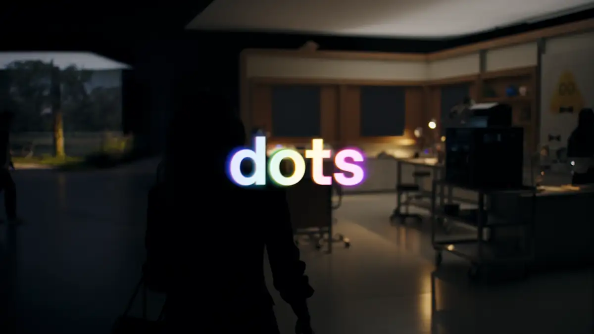
OpenAI
OpenAI上线Dots并推出Sol
来源: OpenAI · 2026-09-30 · 原文链接
OpenAI在DevDay推出全天运行的Dots与GPT-6.1 Sol。Dot拥有独立cloud computer，可连接逾4000个apps、按计划持续工作，并以逐动作规则、授权与活动视图限制执行；Sol的API价为每百万token输入2美元、cached input 0.10美元、输出10美元，context为105万。Dots向Pro、Business Premium滚动开放，Enterprise仍是默认关闭的beta；Sol暂未进入普通Chat。
Janet 锐评：
Dots最重要的不是“24小时在线”，而是OpenAI承认全天运行必须附带规则、批准和完整活动记录；否则便利会迅速变成权限事故。Sol则把另一笔账压低到Astra标准价格的约五分之一，但官方跑分仍不等于你的工作流。长期Agent的采购表至少要同时放进任务成功率、人工接管次数、缓存命中和失败后的恢复成本。
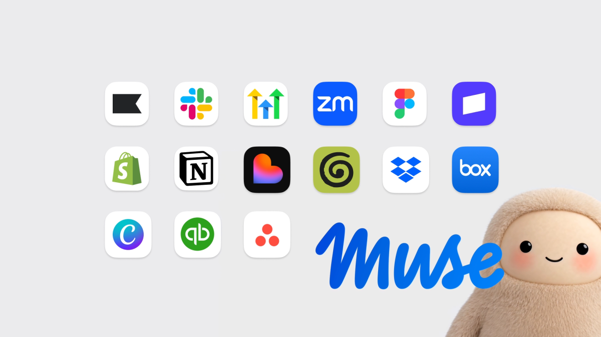
Meta Newsroom
Meta推出小企业经营Agent
来源: Meta Newsroom · 2026-09-30 · 原文链接
Meta推出Muse for Small Business，把Facebook、Instagram商业账号与Asana、Canva、Figma、QuickBooks、Shopify、Slack、Stripe等工具接进同一Agent。它可分析经营数据、起草活动并主动提示任务，但发布、发送或花钱前都要用户批准；目前主要面向美国和加拿大，实际任务成功率与跨工具成本未披露。
Janet 锐评：
小企业缺的往往不是再多一个聊天入口，而是有人把广告、财务、客户和待办串起来。Meta把付款与发布卡在人类确认前，边界算清楚；跨十几个系统后的权限撤销、数据留存和连接器故障，才是日后最容易被营销演示藏掉的维护账。
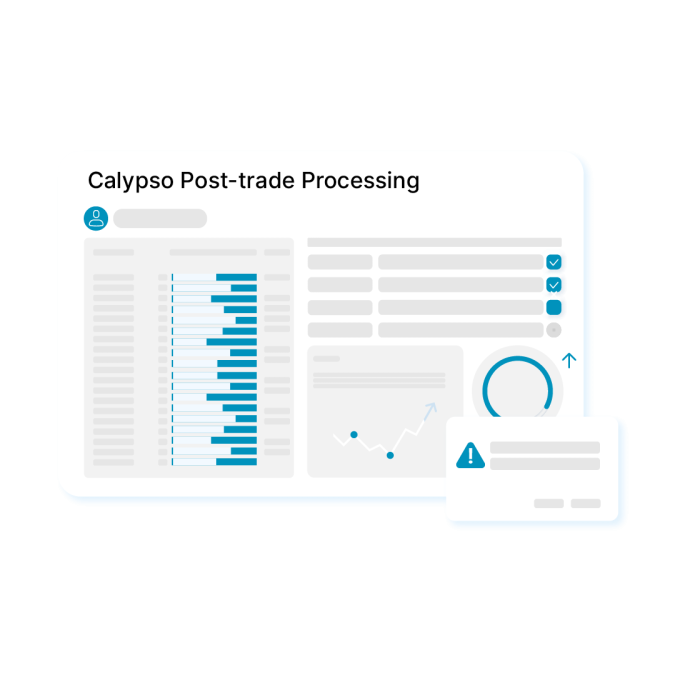
Nasdaq / AWS
Nasdaq给交易后台建Agent沙盒
来源: Nasdaq / AWS · 2026-09-30 · 原文链接
Nasdaq Calypso在交易生命周期平台内建立受治理的Agent运行环境，首批自然语言助手可查询交易、风险和抵押品等system-of-record数据；机构也能经MCP连接自有或第三方Agent。环境由Amazon Bedrock承载，并强调沙盒、机构边界与实时监督；对账、损益调查和结算干预Agent仍是未来数月路线图。
Janet 锐评：
金融后台没有“先跑起来再说”的空间。Calypso把Agent关在机构边界内、允许外接却不让数据外流，方向比万能助手务实；首批只是查询助手，后面的自动对账与结算干预还得逐项证明权限和回滚能力。
Salesforce
Salesforce签约收购Listen Labs
来源: Salesforce · 2026-09-30 · 原文链接
Salesforce签署收购Listen Labs的最终协议，拟将其AI访谈、研究设计与洞察汇总能力并入Marketing Cloud、Service Cloud等产品。Listen Labs称可调用逾5000万参与者、覆盖120多种语言，并以真实客户行为生成digital twins供方案预演；交易金额未披露，预计Salesforce 2027财年第四季完成，仍待监管许可。
Janet 锐评：
Salesforce买的不是问卷工具，而是把真实访谈和模拟反应一起塞进客户决策链。五千万参与者与一百二十种语言很亮眼，digital twin却只能帮团队比较假设，不能替代上线后的真实市场；签约也还不是交割。
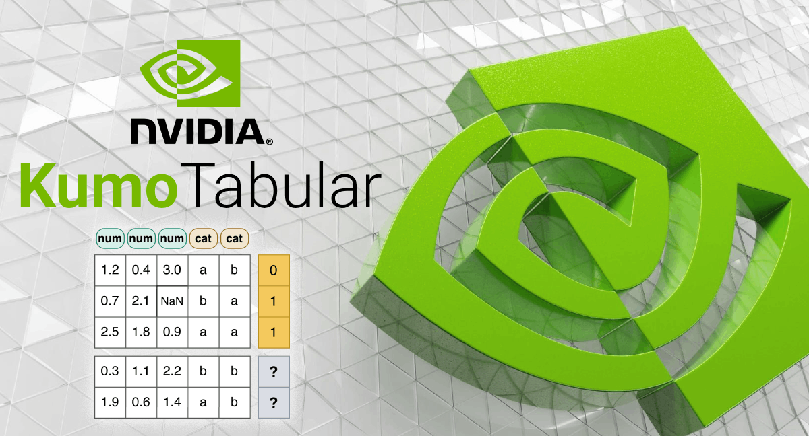
NVIDIA / Hugging Face
NVIDIA发布开放权重表格模型
来源: NVIDIA / Hugging Face · 2026-09-30 · 原文链接
NVIDIA发布Kumo Tabular开放权重模型，提供2800万、约1亿和2.15亿参数三档，仅用合成表格预训练，无需针对任务训练、调参或手工特征工程，一次forward即可做分类或回归。官方称它在四组表格榜单居首，TabArena ELO为1950，单张RTX 6000 Pro上比LimiX-2快17倍；原生输入只含数值与类别，单次forward最多10类，训练配方和合成数据生成器尚未放出。
Janet 锐评：
表格模型很少抢到头条，却可能比通用聊天模型更快进入定价、流失、风控和运营预测。Kumo的诱惑是免调参、开放权重和单卡速度，缺口也同样具体：超过十类要绕ECOC，文本列不在原生输入里，分布漂移会掉点，复现训练还缺配方。四榜第一可以打开测试清单，不能替团队省掉自己的留出集。
Thomson Reuters
Thomson训练法律财税专用模型
来源: Thomson Reuters · 2026-09-30 · 原文链接
Thomson Reuters公布自研domain LLM Thomson，以Westlaw、Practical Law、Checkpoint和Reuters等专业内容构建，首个部署是CoCounsel Legal的Tabular Analysis，可让用户针对最多1万份文件提出100个问题并生成结构化结果。公司未披露参数量、基础架构、价格或外部benchmark，准确度与可追溯性仍需在真实案件中核验。
Janet 锐评：
专业模型的壁垒不在名字里，而在资料授权、更新频率和答案能否回到证据。一次扫一万份文件很适合法务尽调；若引用链、版本日期与人工抽查没有同时落地，规模只会放大一种错误。
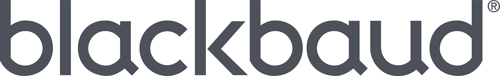
Blackbaud
Blackbaud推出募款专用模型
来源: Blackbaud · 2026-09-30 · 原文链接
Blackbaud发布面向fundraising intelligence的Lantern，与Databricks合作，在open-weight模型上使用Social Impact Signal Graph生成的合成场景做post-training，目标是理解捐赠者留存、升级路径与长期关系。Lantern计划自2027年起嵌入Platform for Good、Raiser’s Edge NXT等产品；base model、参数量、价格和量化benchmark均未公布。
Janet 锐评：
垂直模型如果只换一层术语，价值很薄；Lantern至少把donor graph和募款情境放进训练目标。它目前仍是一张2027路线图，没有base model与对照成绩，采购期待不宜跑在产品前面。
Ollama
Ollama发布非文本决策模型
来源: Ollama · 2026-09-30 · 原文链接
Ollama v0.35.0预发行版加入decision models支持，通过基于TypeSafe Jev API的/v1/systemone端点，让Nimble、Tev1等模型返回choice、probability或score，而不是生成文本，可用于分类、路由与分诊。该版本仍标为Pre-release，接口稳定性、模型覆盖与生产兼容性尚待验证。
Janet 锐评：
不是每个模型调用都该吐一段话。把选择、概率和分数做成类型化接口，路由和分诊会更容易测试；Pre-release标签也说明它更适合沙盒验证，离稳定依赖还有一段路。
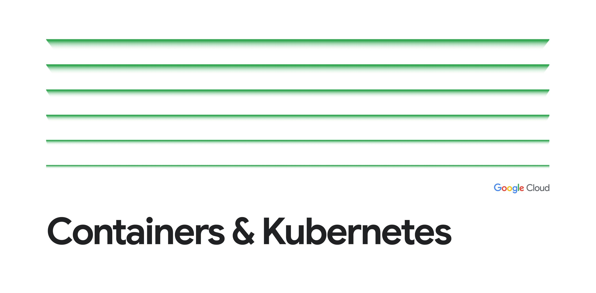
Google Cloud
GKE推出RL专用Agent沙盒
来源: Google Cloud · 2026-09-30 · 原文链接
Google Cloud将GKE Agent Sandbox与配套RL orchestration SDK推向GA。官方在10节点gVisor池的测试中，把time-to-first-command从45至85秒压到1至9秒，最差长尾由7.5分钟降至10秒内，并称in-place pod recycling可减少3倍控制面抖动；示例负载同时启动18312个沙盒。数字来自厂商设定，镜像、节点与任务不同都可能改写结果。
Janet 锐评：
训练Agent最烧钱的空转，往往发生在模型还没开始工作之前：等容器、拉镜像、建隔离环境。把首命令压到个位数秒，比一句“支持大规模RL”有价值得多；但1到9秒来自特定十节点池，团队仍需用自己的镜像大小、并发波峰和失败回收重跑。好沙盒不只启动快，还要在几万次重置后不泄漏状态。
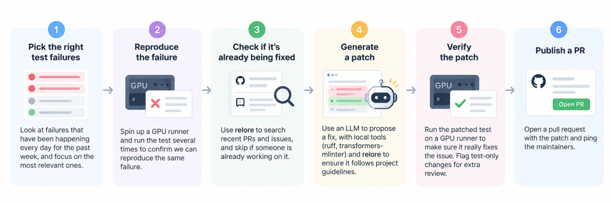
Hugging Face
Hugging Face发布修Bug Agent账本
来源: Hugging Face · 2026-09-30 · 原文链接
Hugging Face披露夜间CI修复Agent Serge的80天运行数据：29个修复合入，近两周117组失败中86组进入LLM，产生19个不同PR；86次session约花250美元，折合每个合入PR约43美元。它也公开了28次无安全补丁、18次GPU验证失败、5次超时及11次执行或解析失败，主分支仍由维护者把关。
Janet 锐评：
二十九个合入很能打，失败漏斗更有用：它告诉你钱花在哪一层、哪类问题机器仍接不住。每个补丁在原树与新树各跑五次GPU验证，也比“Agent会修Bug”更接近生产证据。
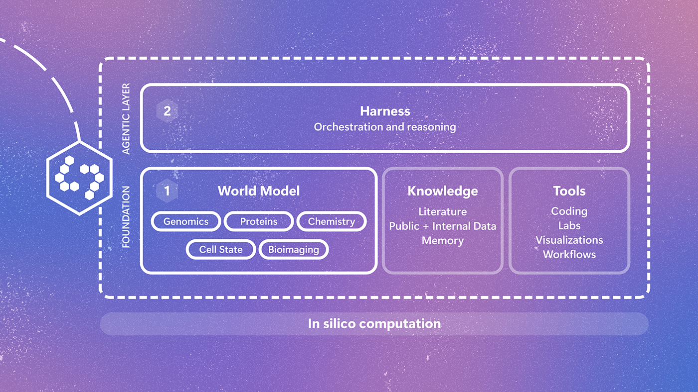
Microsoft Research
Microsoft用Quine缩短肿瘤筛选
来源: Microsoft Research · 2026-09-30 · 原文链接
Microsoft Research与Broad Institute推出实验性科研系统Quine，以多模态biology world model串联文献、软件工具、研究者和湿实验。在胰腺导管腺癌项目中，系统从数千种化合物里排出候选并获得多项湿实验验证，官方称把可能耗时数月的优先级筛选压到一个周末；它仅供研究，不是临床工具，也未披露命中率与候选明细。
Janet 锐评：
科研Agent的漂亮答案不算终点，湿实验才是裁判。Quine跨过了这道门槛，但未公开候选数和命中率；“一个周末”说明协作速度，尚不能说明药物成功概率。
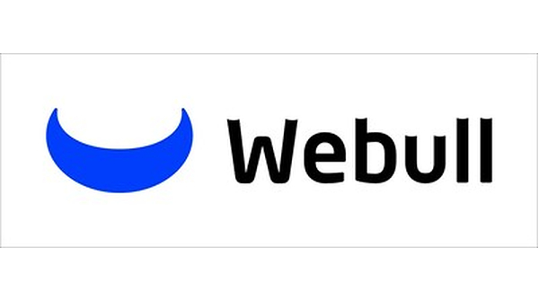
Webull
Webull接入MCP并保留交易确认
来源: Webull · 2026-09-30 · 原文链接
Webull扩展Cloud MCP，让美国合资格用户通过Claude、Perplexity和Grok查询实时与历史行情、基本面、持仓及订单记录，并让助手准备股票、ETF、期权、期货、crypto等订单；提交市场前仍须逐笔确认，ChatGPT接入还在等待平台批准。它不是自动炒股服务，费用、平台权限差异与成功率尚未披露。
Janet 锐评：
MCP跨进交易准备，风险边界必须比查天气更硬。Webull把最后一击留给用户，避免一句话直接下单；研究建议如何呈现来源、账户权限如何撤销，仍会决定它是效率工具还是误触放大器。
今日核心预测
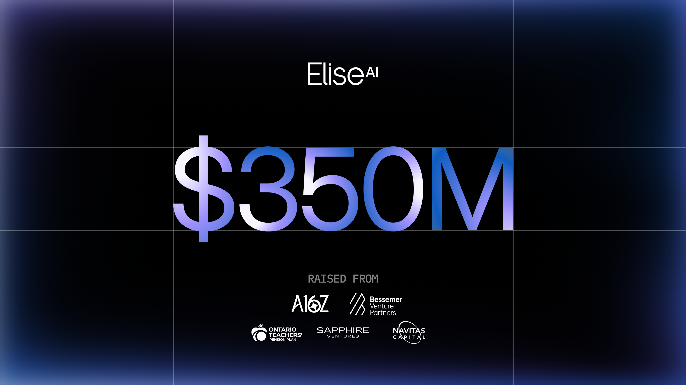
EliseAI / GlobeNewswire
EliseAI融资三点五亿美元扩后台
来源: EliseAI / GlobeNewswire · 2026-09-30 · 原文链接
住房与医疗运营自动化公司EliseAI完成3.5亿美元新融资，估值40亿美元，由a16z与Bessemer共同领投。公司称2026年ARR已超过2亿美元、连续五年同比翻倍，并覆盖美国约六分之一公寓；资金将扩充住房、医疗产品及旧金山工程中心。这轮未公布Series名称，ARR、覆盖率和Apollo Agent效果均为公司口径。
Janet 锐评：
40亿美元估值旁边最有用的数字是2亿美元ARR，说明垂直Agent已经能从后台重复劳动里抽出一门大生意；但住房与医疗都靠本地规则、系统接入和长期部署，复制速度不会像卖API。连续五年翻倍与六分之一公寓覆盖仍需独立拆分，投资人押的是实施能力能否继续产品化，而非又一个通用模型故事。
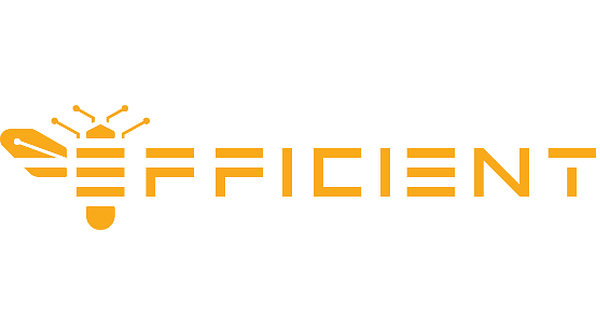
Efficient Computer
Efficient融资九千七百万扩芯片
来源: Efficient Computer · 2026-09-30 · 原文链接
Efficient Computer签署逾9700万美元Series B融资协议，估值6.5亿美元、累计融资1.73亿美元，由TQ Ventures领投。Electron E1已进入量产，资金用于扩大交付，并把Fabric架构推进到datacenter-class performance；公司宣称一般计算能耗可改善10至100倍，未来数据中心系统目标超过10倍，但尚无统一第三方benchmark。
Janet 锐评：
边缘芯片已经量产，数据中心版本仍是下一段路，两者不能揉成同一项成绩。九千七百万美元会买来产能和验证时间；十到一百倍节能若没有同负载、同精度与墙上功耗，先当厂商目标看。
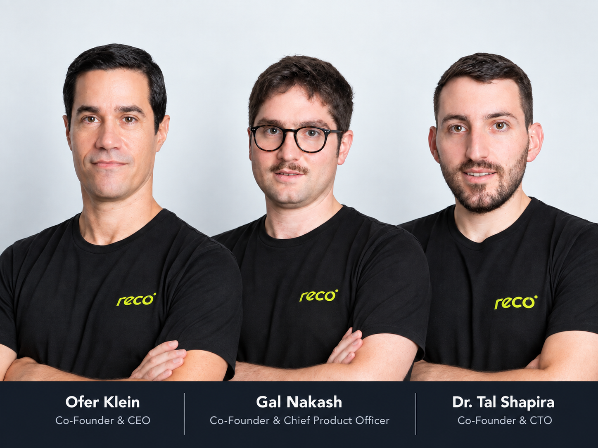
Reco / GlobeNewswire
Reco再融资五千五百万管权限
来源: Reco / GlobeNewswire · 2026-09-30 · 原文链接
Agent安全公司Reco获得额外5500万美元融资，累计融资1.4亿美元，AT&T Ventures、Forestay与Quadrille Capital等参与；公司用Reco Graph映射Agent、身份、应用、权限、数据与workflow，并称已有280多项应用集成和1000个detection controls。官方未披露轮次与估值，资金重心包括销售、渠道和客户支持。
Janet 锐评：
Agent身份安全正在从概念变成预算项，AT&T既投资又当客户是个商业信号。可新增资金大量投向销售与渠道，不能自动证明产品领先；权限图能否持续跟上临时Agent和影子连接，才是续费的底。